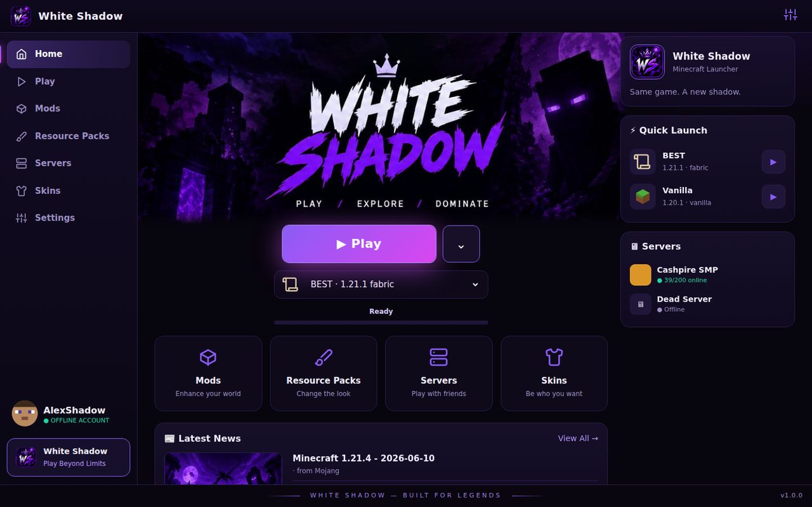
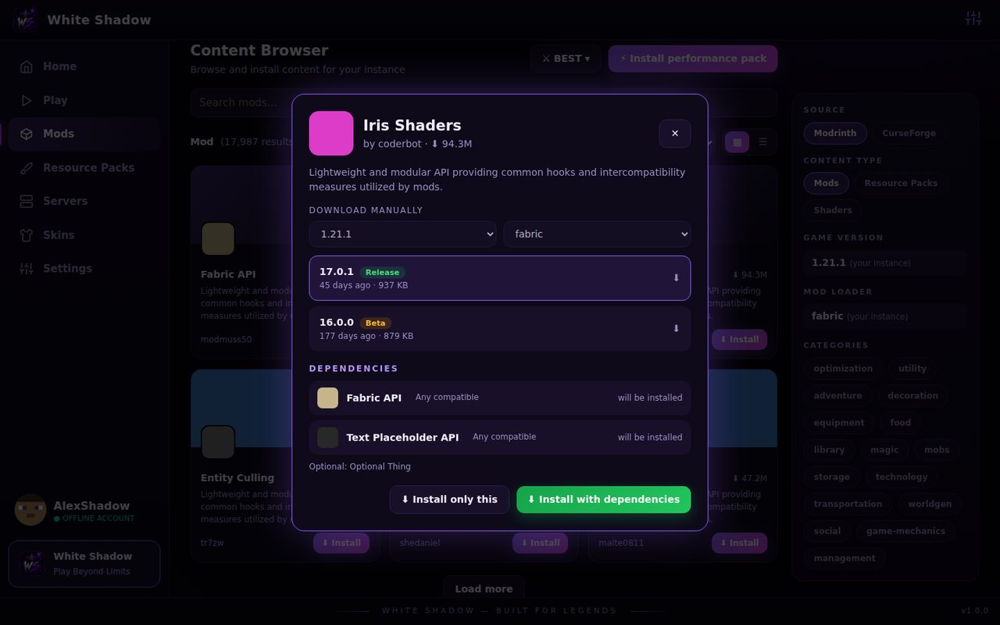
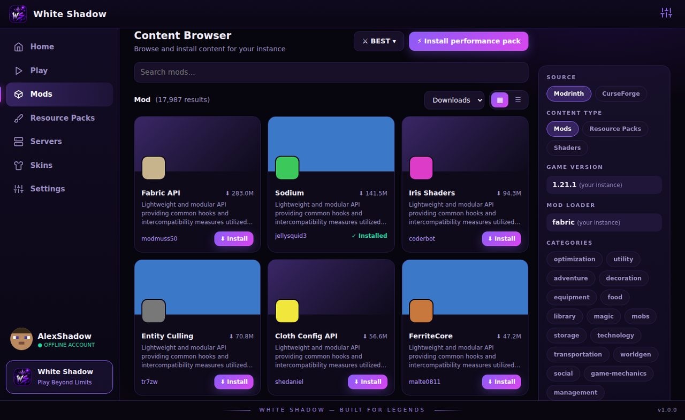
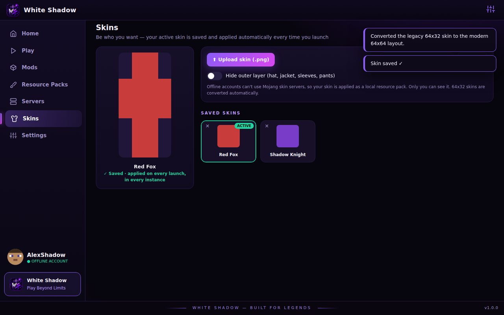
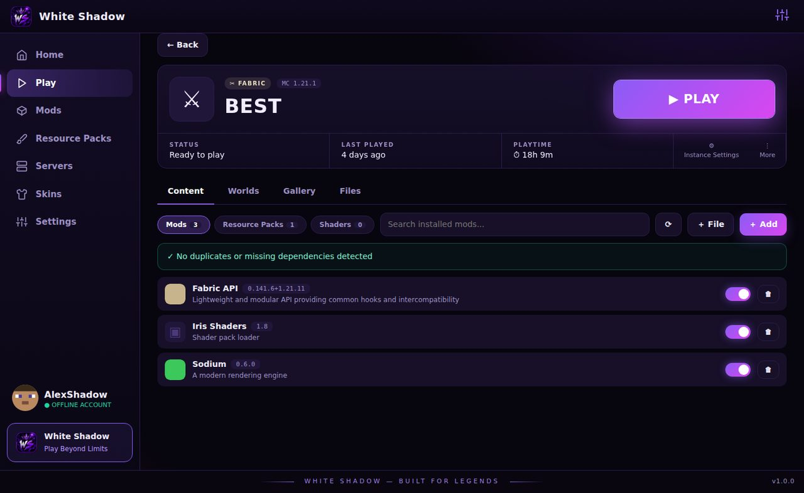

Everything you need to play
One app that downloads Minecraft, manages your worlds and mods, and keeps your skin on every launch.
Play in one click
Downloads Minecraft, Fabric and the right Java for you. Nothing to install first.
Mods with their dependencies
Browse Modrinth, pick a version, and White Shadow installs every mod it needs to run. Resource packs and shaders too.
Your skin, saved
Keep a library of skins. The one you choose is applied automatically every time you launch.
Instances
Separate versions, mods, memory and Java per instance. Duplicate, share (.wsprof) and import setups.
Servers
Save servers, see who is online and join with one click.
Crash helper
If the game stops, White Shadow explains why in plain words and offers a one-click fix.
12 languages
English, العربية, Español, Français, Deutsch, Português, Русский, Türkçe, 中文, 日本語, 한국어, हिन्दी.
Private
No telemetry. Your settings, accounts and worlds stay on your computer.
Good to know: White Shadow uses offline accounts. That works for singleplayer, LAN and servers that allow offline players. It does not replace owning Minecraft, and Microsoft sign-in is not supported yet.
See it in action
Screenshots of the launcher (sample data).










Download White Shadow
Choose your system. The download is the whole app - there is nothing else to install.
Install in three steps
No Python. No command line.
Download
Pick the file for your system above.
Open it
Windows: run the installer (or the portable .exe).
macOS: unzip, drag WhiteShadow to Applications, right-click → Open the first time.
Linux: make it executable, then run it.
Press Play
Pick a username, choose an instance and press Play. The first launch downloads the game (about 1 GB).
"Windows protected your PC"? White Shadow is new and not yet code-signed, so Windows SmartScreen may warn on first run. Choose More info → Run anyway. Verify your download with the checksum shown on each download card.
System requirements
| Windows | Windows 10 or 11, 64-bit. The Microsoft WebView2 component is already part of Windows 11 and recent Windows 10; the app installs it itself if it is missing. |
|---|---|
| macOS | macOS 11 or newer on Apple Silicon (M1 and later). |
| Linux | 64-bit desktop Linux with a Chromium-based browser installed (Chrome, Chromium, Edge or Brave); White Shadow opens in its own app window. |
| All | About 2 GB free disk space and an internet connection for the first launch. Java is downloaded automatically. |
Questions
Do I need Python or anything else installed?
No. The launcher you download is a complete app. You only need your computer and an internet connection.
Do I need to buy Minecraft?
White Shadow runs offline accounts, which work for singleplayer, LAN worlds and servers that allow offline players. Servers that require a purchased account will not accept it. Please support Mojang if you can.
Where are my files?
Everything lives in one data folder you can move to another drive in Settings → Storage, including worlds, mods and saved skins.
How do I uninstall it?
Windows: Settings → Apps → White Shadow (installer version) or just delete the portable file. Then delete the data folder if you want to remove your worlds as well.
Is it safe?
Each download card shows a SHA-256 checksum so you can confirm the file is exactly what was published. The source of the launcher is the single file you can read.
Why does my antivirus or Windows warn me?
New, unsigned apps often trigger a first-run warning. Verify the checksum and choose "Run anyway" only if it matches.
Changelog
What's new in each release.
Loading…